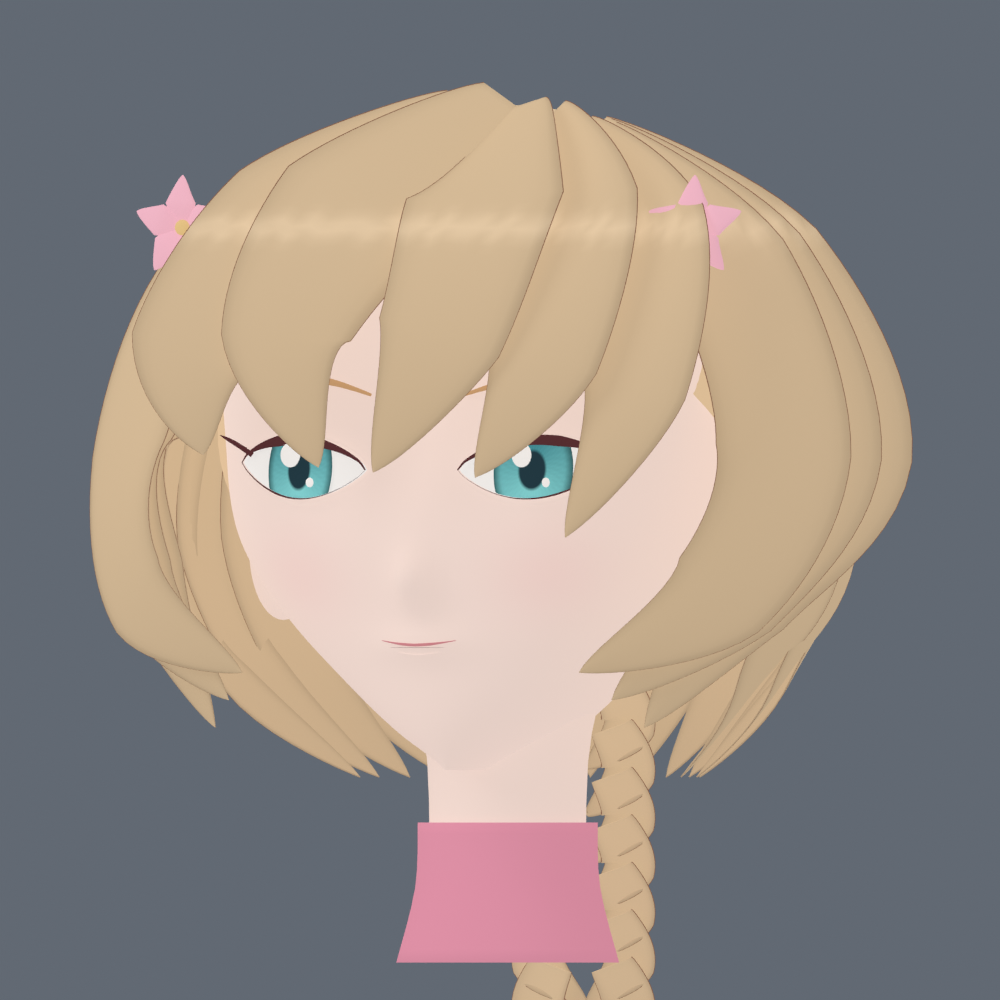

スレイヤー · 2D / 3D 比較
2D · イラスト候補
生成イラスト／全身・閉眼・口開きの試作素材3D · Unity実機の保存画像
現在のモデルの実画像／この画面では自由回転・骨格動作なし素材を読み込み中…
両側に同じ移動・光・タイミングを適用する配置比較です。剣を振る動作、髪・翼の揺れ、実戦の速度・待機・詠唱計算を比較するものではありません。5枠は同じスレイヤーを使っています。全身は通常表情のみです。
3D頭部の再設計試作も確認する

Unity組み込み前の頭部のみの試作。上の3Dと混同せず、髪・輪郭の改善量を確認してください。